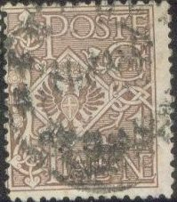
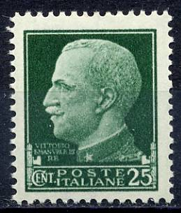

{kind=link}



Return To Catalogue - Italy overview - Italy King Victor Emanuel III (1901-1929) - Italy 1930-1944
Note: on my website many of the
pictures can not be seen! They are of course present in the
catalogue;
contact me if you want to purchase the catalogue.
For stamps of Italy with the image of King Victor Emanuel III issued during this period, click here.
1 c brown 2 c red-brown 5 c green Surcharged

'10 CENTESIMI' on 1 c brown (1923) '10 CENTESIMI' on 2 c red-brown (1923)
These stamps have watermark 'Crown' and perforation 14. For these stamps with overprint in 'centesimi di corona' click here. Stamps with overprint 'LA CANEA' were issued for Crete.
Value of the stamps |
|||
vc = very common c = common * = not so common ** = uncommon |
*** = very uncommon R = rare RR = very rare RRR = extremely rare |
||
| Value | Unused | Used | Remarks |
| 1 c | c | c | |
| 2 c | c | c | |
| 5 c | c | vc | |
| 10 c on 1 c | c | c | |
| 10 c on 2 c | c | c | |
I've seen postal stationery in the 5 c green design.
A postal forgery of the 5 c seems to exist (without watermark), but I have never seen it.

5 c green 15 c red
These stamps have perforation 14 x 13 1/2.
Value of the stamps |
|||
vc = very common c = common * = not so common ** = uncommon |
*** = very uncommon R = rare RR = very rare RRR = extremely rare |
||
| Value | Unused | Used | Remarks |
| 5 c green | *** | *** | |
| 15 c red | ** | ** | |
5 c red 15 c green
Value of the stamps |
|||
vc = very common c = common * = not so common ** = uncommon |
*** = very uncommon R = rare RR = very rare RRR = extremely rare |
||
| Value | Unused | Used | Remarks |
| 5 c red | *** | *** | |
| 15 c green | *** | *** | |

2 c brown 5 c green 10 c red 15 c black Surcharged '2' on 5 c green '2' on 10 c red '2' (violet) on 15 c black
These stamps have perforation 14 x 13 1/2.
Value of the stamps |
|||
vc = very common c = common * = not so common ** = uncommon |
*** = very uncommon R = rare RR = very rare RRR = extremely rare |
||
| Value | Unused | Used | Remarks |
| 2 c | c | c | |
| 5 c | * | * | |
| 10 c | * | * | |
| 15 c | * | * | |
| 2 on 5 c | c | c | |
| 2 on 10 c | c | c | |
| 2 on 15 c | c | c | |

5 c black 15 c brown
These stamps have perforation 14 x 13 1/2.
Value of the stamps |
|||
vc = very common c = common * = not so common ** = uncommon |
*** = very uncommon R = rare RR = very rare RRR = extremely rare |
||
| Value | Unused | Used | Remarks |
| 5 c | c | * | |
| 15 c | * | * | |
10 c + 5 c red 15 c + 5 c grey 20 c + 5 c orange Surcharged (1916) '20' on 15 c + 5 c grey
These stamps have perforation 14 x 13 1/2 and watermark 'Crown'.
Value of the stamps |
|||
vc = very common c = common * = not so common ** = uncommon |
*** = very uncommon R = rare RR = very rare RRR = extremely rare |
||
| Value | Unused | Used | Remarks |
| 10 c + 5 c | c | c | |
| 15 c + 5 c | c | * | |
| 20 c + 5 c | * | * | |
| 20 on 15 c + 5 c | * | * | |
These stamps exist with overprint 'SOMALIA' or 'LIBIA'.
15 c black and red 25 c blue and red 40 c brown and red
15 c lilac ('LA DIVINA COMEDIA')
25 c green (woman representing goddess holding book)
40 c brown (Dante holding book)

5 c green 10 c red 15 c blue 25 c blue Surcharged (1924) 1 L on 5 c green 1 L on 10 c red 1 L on 15 c blue 1 L on 25 c blue
These stamps exist with overprint 'LIBIA'.
20 c brown (Amor) 40 c brown (portrait of Mazzini) 80 c blue (burrial monument of Mazzini)
20 c green and brown 30 c red and brown 50 c violet and brown 1 L blue and brown
These stamps exist with overprint 'TRIPOLITANIA' (in red or black) or with overprint 'CIRENAICA', or 'SOMALIA ITALIANA' (with surcharge in 'besa').
10 c green (fasces or axe with branches) 30 c violet (fasces or axe with branches) 50 c red (fasces or axe with branches) 1 L blue (eagle sitting on fasces) 2 L brown (eagle sitting on fasces) 5 L black and blue (aeroplanes and star)
These stamps exist with overprint 'ERITREA', 'TRIPOLITANIA' or 'CIRENAICA'.
With 'TRIPOLITANIA' overprint
30 c + 30 c brown 50 c + 50 c violet 1 L + 1 L grey
10 c red and black ('E PESCARENICO'; fishing village)
15 c green and black ('IL RESEGNO')
30 c black and grey ('ADDIO MONTI....')
50 c light brown and black ('QUEL RAMO DEL LAGO....')
1 L blue and black ('CASA MANZONI'; Manzoni's birthplace in Milan)
5 L lilac and black (portrait of Manzoni in circle)

With 'ERITREA' overprint
These stamps exist with red overprint 'ERITREA' for use in Eritrea and 'CIRENAICA'.
20 c + 10 c green and brown (S. Mario Maggiore) 30 c + 15 c brown (S. Giovanni di Laterano) 50 c + 25 c violet and brown (S.Paolo Furoi le Mura) 60 c + 30 c red and brown (S.Pietro in Vaticano) 1 L + 50 c blue and violet (the three knocks on the holy door) 5 L orange and violet (closing of the holy door)
Stamps with inverted center (60 c and 5 L) are bogus issues.
These stamps exist with overprint 'TRIPOLITANIA'
in red or black.
This set, overprinted with 'TRIPOLITANIA' in black or red
(reduced sizes)
They also exist with overprint 'ERITREA' and 'CIRENAICA'.
20 c green (St. Francis has a vision in Jerusalem) 30 c black (St.Francis with church of Porziuncola in background) 40 c violet (convent of St.Diamino) 60 c red (monastry and church in Assisi) 1.25 L blue (scene depicting the death of St.Francis) 5 L + 2.50 L brown (design as 30 c)


Overprinted 'ERITREA' or 'Eritrea'
These stamps (except 30 c) exist with overprint 'ERITREA' or 'Eritrea' to be used in Eritrea (5 L with changed colour). They also exist with overprint 'CIRENAICA' or 'Cirenaica' or overprint 'TRIPOLITANIA'.
40 c + 20 c brown and black (castle of St.Angelo) 60 c + 30 c red and brown (aquaduct of Claudius) 1.25 L + 60 c green and black (Capitol with Forum Romanum) 5 L + 2.50 L blue and black (Porta del Popolo) Changed values and colours (1927) 30 c + 10 c lilac and black 50 c + 20 c olive and black 1.25 L + 50 c blue and black 5 L + 2 L red and black Changed values and colours (1930) 30 c + 10 c grey and lilac 50 c + 10 c grey and green 1.25 L + 30 c blue and green 5 L + 1.50 L brown (two shades on one stamp)
These stamps (some in other colours) exist with overprint 'ERITREA' to be used in Eritrea. They also exist with overprint 'CIRENAICA', 'TRIPOLITANIA' and 'SOMALIA ITALIANA'.
Reduced sizes, overprint 'SOMALIA ITALIANA'
20 c red 50 c black 60 c blue 1.25 L blue
20 c violet with 'Eritrea' overprint
These stamps exist (except 60 c) in different colours with overprint 'Eritrea' to be used in Eritrea. They also exist with overprint 'Tripolitania', 'Cirenaica' and 'Somalia Italiana'.
Philibert standing
20 c brown and blue 25 c red and green 30 c green and brown 5 L violet and green Statue with horse
1.25 L blue and black 20 L violet and grey Philibert in fighting scene
50 c brown and blue 75 c red 1.75 L green and blue 10 L black and red
50 c + 10 c green

For Italy, Imperial issue of 1929, click
here.
20 c orange 25 c green 50 c + 10 c brown 75 c + 15 c red 1.25 L + 25 c blue (design as 20 c) 5 L + 1 L lilac (design as 75 c) 10 L + 2 L black
These stamps exist in different colours with overprint 'ERITREA' or 'Eritrea' for use in Eritrea. Also with overprint 'CIRENAICA' for Cyrenaica, and 'SOMALIA ITALIANA'.
{kind=link}
{kind=link}